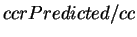
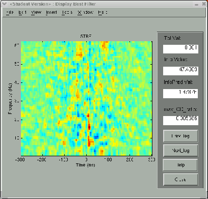

Next: Summary and Future Work
Up: Application of the STRFPAK
Previous: Display Information Value and
Contents
When the user clicks the Display Best STRF button in the main window,
it sorts the estimated STRFs based on the predicted information values
and
chooses the best estimated STRF which
has the largest predicted information value.
It then
displays the best estimated STRF in the left panel of the window
and gives all the related
information in the right text fields of the window.
Figure 3.16 shows
the best estimated STRF for the auditory example.
The right panel in the window gives the tolerance value used for this STRF,
the information value from the actual data,
the predicted information value of the best estimated STRF,
and the max
 ratio.
If the spatial domain of the stimulus file is  ,
the best filter is shown as
a list of video frames.
,
the best filter is shown as
a list of video frames.
Figure 3.16:
Display best estimated STRF for the auditory example
|  |
Next: Summary and Future Work
Up: Application of the STRFPAK
Previous: Display Information Value and
Contents
2003-03-19